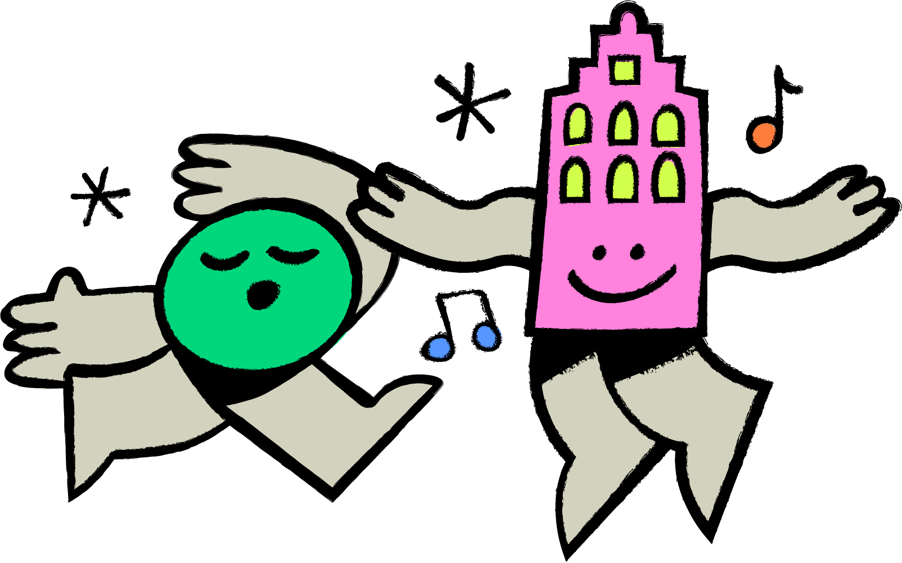
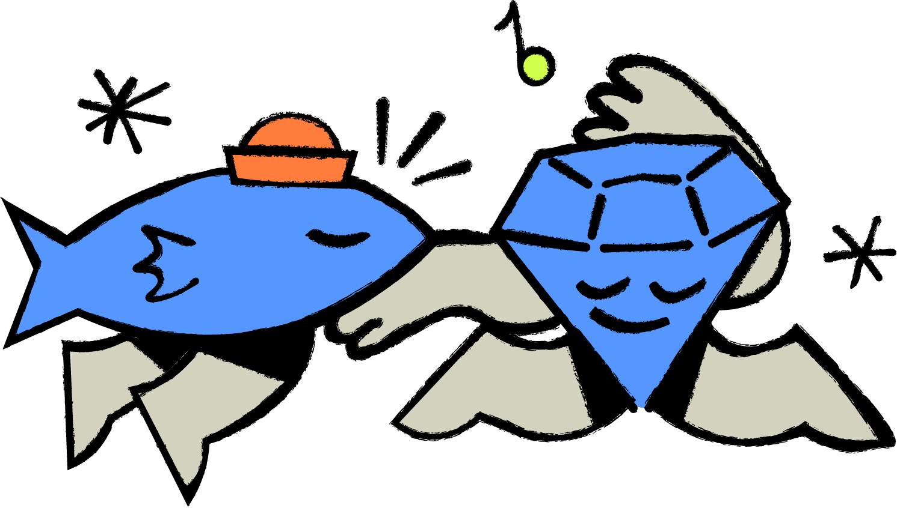
Still waiting for that city trip your friendgroup talked about?
Ready to Antwerp transforms trip planning into a social game. Friends compete in mini-games, share their preferences, align their availability and unlock rewards, making it easier to organise a city trip to Antwerp together. By turning planning into a fun and collaborative experience, the platform helps groups move from discussing a trip to actually taking one.
CONNECT
Meet team
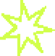
Heyy there!
We are third-year Communication and Multimedia Design students at Rotterdam University of Applied Sciences. This project was created in collaboration with Digital Design and Development (Devine) students from Howest University of Applied Sciences and our client, Visit Antwerp. The project began with three multidisciplinary teams, each developing a unique concept. Following this phase, the CMD students were merged into a new team to start reconcepting and further develop and refine the final concept presented here.
Briefing
Visit Antwerp wants to attract more Young Urban Travellers (18–36) to choose Antwerp for a multiday city trip. This audience actively avoids traditional tourism marketing and is more influenced by friends and social media than by official channels. The challenge was to create an innovative, digital-first concept that feels authentic and encourages them to discover Antwerp.
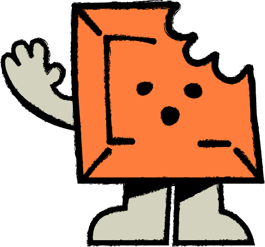
Problem
Through research and our own experiences, we found that most city trip ideas never make it beyond the group chat. While friend groups are excited to travel together, planning often becomes frustrating due to conflicting schedules, different interests and a lack of coordination. As a result, one person ends up organising everything or the trip never happens at all. The real challenge is not convincing people to visit Antwerp, but to remove the coordination friction that stops great trips from happening in the first place.
The goal
Current situation

- One person does everything
- Left on read
- "Free whenever" = never
- Calls that never happen
- Endless back-and-forth
- Energy fades fast
- Too many opinions
- Dies in the group chat
Desired situation

- One link, no effort
- Fast, no download
- Planning becomes a game
- Friendly competition
- Friends nudge friends
- Preferences, no arguing
- Real discounts to go
- Out of the group chat
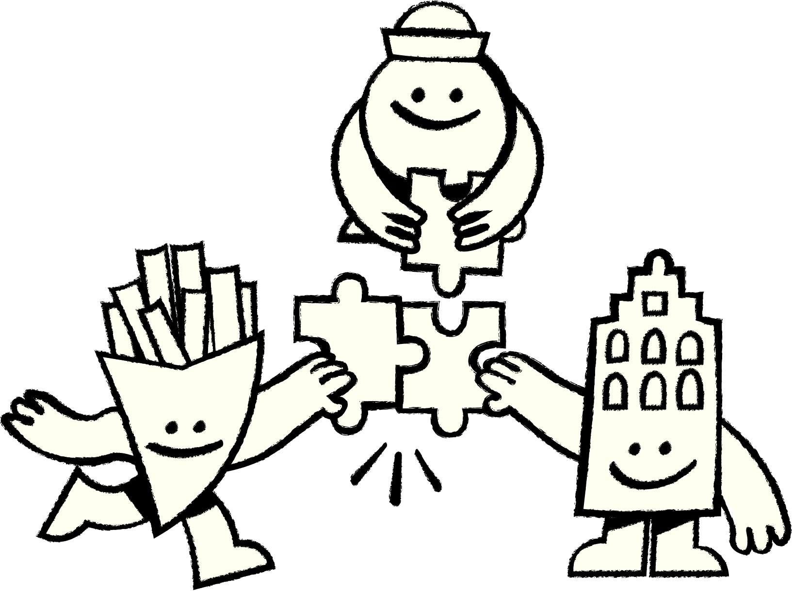
Stakeholders &
Target Audience
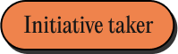
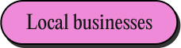
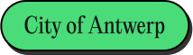
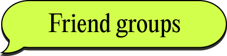
We focused on one target audience: friend groups, primarily Gen Z and zillennials, who regularly take city trips together. As students or young professionals at the start of their careers, they often have the time and desire to travel but are limited by a modest budget, making a nearby destination such as Antwerp an attractive option. While the entire friend group is part of the experience, the platform is specifically designed to support the initiative taker who usually drives the planning process. These travellers value authentic experiences and trust recommendations from friends more than traditional tourism marketing.
Ready to Antwerp connects three key stakeholders: Visit Antwerp, local businesses and young travellers. Visit Antwerp benefits from increased visibility and city visits, while local businesses gain exposure through rewards and discounts offered within the platform. For travellers, the platform simplifies trip planning and creates personalised experiences based on their interests. Together, these stakeholders contribute to an ecosystem that encourages more young people to discover Antwerp.
Experience themes
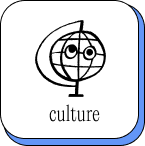
with a modern beat
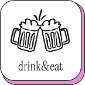
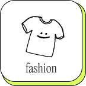
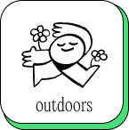
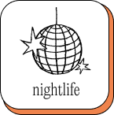
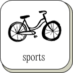
Ready to Antwerp is built around the experience themes provided by Visit Antwerp. These themes are translated into interest categories that users can select during the planning process, allowing the platform to generate personalised recommendations tailored to the group's preferences. By incorporating all experience themes into the concept, Ready to Antwerp offers something for everyone, making Antwerp an appealing destination for a wide variety of travellers and interests.
Research
We interviewed 15 different young adults to learn how they discover destinations, organize group activities, and coördinate plans with friends. Our goal was to uncover frustrations, motivations, and behaviors around planning social trips. These findings helped us identify opportunities to make group trip planning more spontaneous, collaborative, and enjoyable.
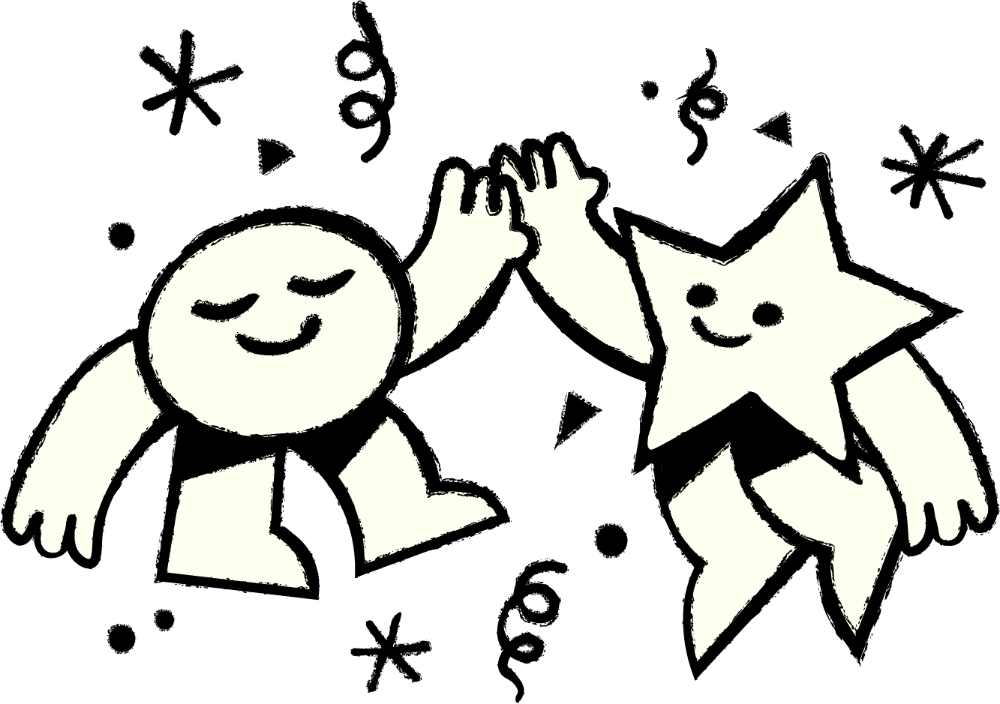
Research questions
- What matters most to you about a city trip?
- What do you want to get out of a trip with friends?
- How does a trip with your friends usually get started?
- How involved are you in planning, or do you tend to follow others?
- How far in advance do you usually plan, and how does that work in a group?
- What's the hardest part of organising a trip with a group?
- Where do you look for information when planning a trip?
- Who or what do you trust most when deciding where to go?
Field research
Insight cards
Following our field research and desk research, each of the three teams created its own set of insight cards based on the collected findings. After the teams were merged, we compared the different insights, combined overlapping observations and refined them where necessary. This resulted in a shared set of insight cards that started the second research phase.
Research 2.0
After the initial research phase during the face-to-face week with the Devine students in Rotterdam, we identified several topics that needed further exploration, including reward systems, user motivation and the role of the initiative taker. We therefore conducted additional desk research to better understand how these factors influence participation and decision-making within friend groups. The insights gained from this research were used to refine the gamification, reward structure and collaborative planning features of Ready to Antwerp.
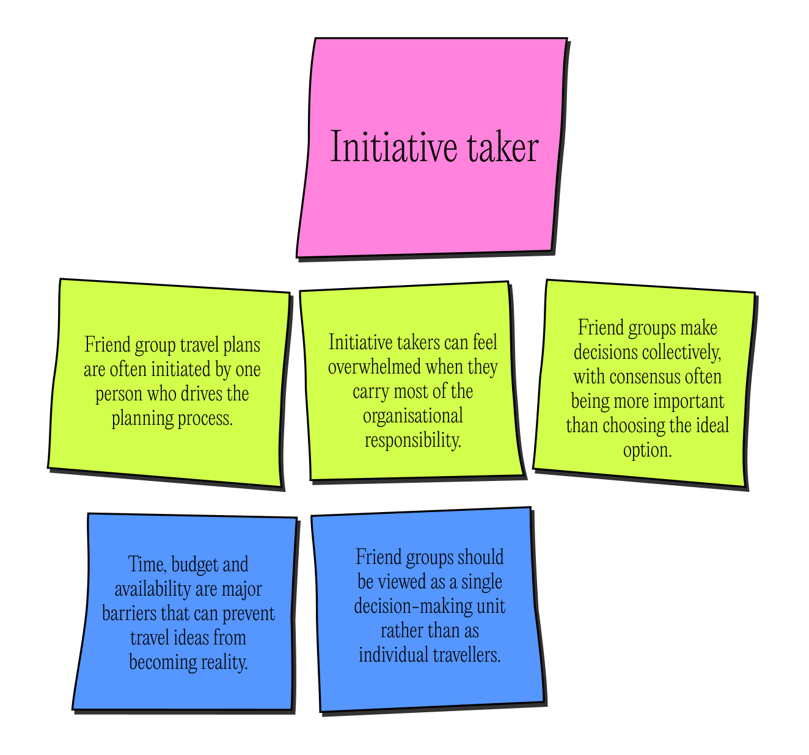
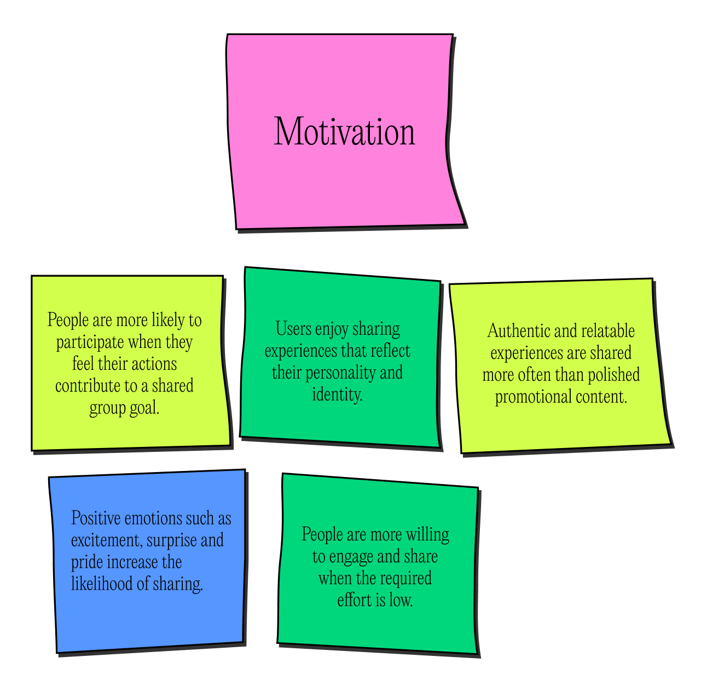
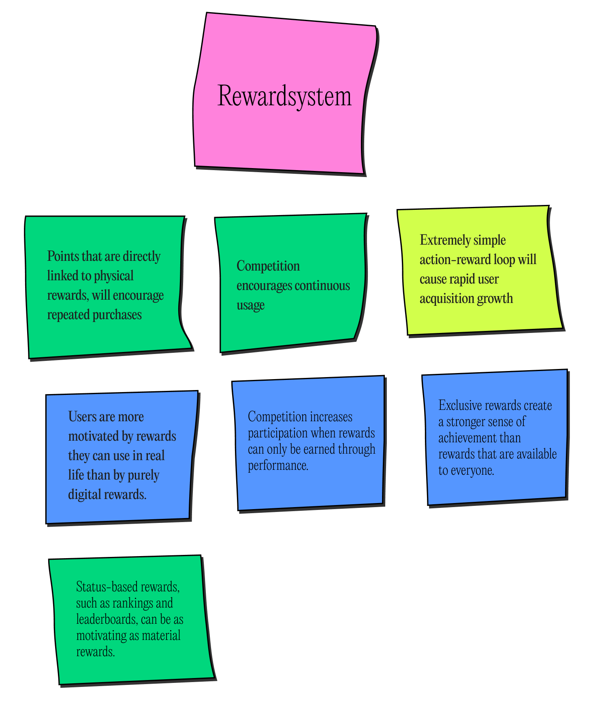
Assumptions
Due to the limited timeframe of this project, not all aspects of the concept could be validated through user research. To support our findings, we conducted additional desk research. We began with a number of assumptions about our concept and explored these further to better understand our target audience and guide our design decisions.
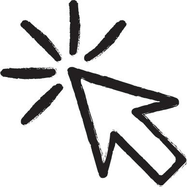
The Social Soul of Urban Travel
- Concept Support: Our concept is built on creating a shared group experience. This research confirms that city trips are inherently social, with the vast majority of leisure travelers choosing the company of friends or partners. Ignoring the social dimension means ignoring the core motivation of the trip itself. Our tool does not just "add" a chat feature; it designs around pre-existing social connections.
- Key Insight: Leisure travel is a collective experience. Statistics show that the overwhelming majority of leisure travelers choose to travel with a partner (61%) or friends (33%), with only a small fraction (12%) traveling alone. Traveling with friends is the preferred option for young adults and is positively perceived as a source of happiness and connection.
References.
- Statista. (n.d.). Forecast: Travel companions of leisure travelers in the US. Retrieved from https://www.statista.com/forecasts/997103/travel-companions-of-leisure-travelers-in-the-us
- Statista. (n.d.). Preference for travel companions in the US by age. Retrieved from https://www.statista.com/statistics/1261314/preference-for-travel-companions-us-by-age/
Building Bonds Through Sharing
- Concept Support: Our concept goes beyond simply booking flights; it aims to create lasting memories for the group. Research proves that actively sharing experiences and memories significantly strengthens social bonds. People value shared memories more than physical gifts. Our tool facilitates the creation of a group narrative right from the planning phase, transforming a logistical task into an opportunity for connection.
- Key Insight: Sharing experiences and memories significantly strengthens social ties. Research in social psychology indicates that people value shared memories over material gifts, and group experiences lead to closer relationships. This supports our vision of an app that acts not just as a logistical tool, but as an accelerator for social connection through trip co-creation.
References.
- Association for Psychological Science. (2014). Sharing memories tightens bonds with friends. Retrieved from https://www.psychologicalscience.org/news/minds-business/sharing-memories-tightens-bonds-with-friends.html
- Elsevier B.V. (n.d.). ScienceDirect abstract [S221242091730030X]. Retrieved from https://www.sciencedirect.com/science/article/abs/pii/S221242091730030X
Beating Planning Stress
- Concept Support: Our platform aims to make planning a 'stress-free' and enjoyable experience. This research documents the frustration many travelers, especially young people, feel during the planning phase—often due to an overload of options and the difficulty of aligning group preferences. Our solution uses gamification and centralization to directly resolve these pain points, turning anxiety into excitement.
- Key Insight: The planning phase of a group trip is frequently perceived as stressful, with 46% of travelers finding it overwhelming. Group 'planners' (often the initiative-takers) feel pressured, and 38% fear disappointing their friends. This stress is particularly acute among young travelers who struggle to coordinate varying preferences and budgets. There is a clear market need for tools that make this process collaborative and cognitively effortless.
References.
- Statista. (n.d.). Stressful aspects of travel planning in the US. Retrieved from https://www.statista.com/statistics/1230198/stressful-aspects-of-travel-planning-us/
- Statista. (n.d.). Reasons for stressful travel planning in the US by age. Retrieved from https://www.statista.com/statistics/1230206/reasons-for-stressful-travel-planning-us-by-age/
Gamification as an Engagement Catalyst
- Concept Support: Our 'How Might We' focuses on using minigames to spark excitement. Research fully backs this choice: gamification is a highly effective tool for increasing user engagement and brand loyalty, particularly among Gen Z and Millennials. Transforming logistics into a collaborative game reduces planning stress and creates a positive brand association from the start, directly motivating the booking action.
- Key Insight: Gamification—the application of game elements in non-game contexts—effectively drives user engagement and loyalty, especially among younger demographics. Introducing collaborative minigames and reward systems (like collective discounts) can turn a tedious logistical phase into a fun experience, encouraging users to interact more with the platform and motivating the final action of booking the trip.
References.
- Statista. (n.d.). Benefits of gamification among US internet users. Retrieved from https://www.statista.com/statistics/1220087/gamification-benefits-among-us-internet-users/
- Statista. (n.d.). US gamification revenue forecast. Retrieved from https://www.statista.com/forecasts/1221379/us-gamification-revenue-forecast
Trust in Digital Word-of-Mouth
- Concept Support: Our concept relies on authentic recommendations provided by locals through our platform. Research confirms that young travelers distrust traditional marketing channels and instead rely heavily on peer recommendations and authentic experiences. This validates our strategy of using locals as curators of genuine content, creating an experience that our target audience perceives as reliable and real.
- Key Insight: Young travelers (Gen Z and Millennials) show a strong preference for authentic recommendations from 'locals' or peers over polished tourism marketing. Currently, 73% of Gen Z travelers trust online peer reviews, and 60% are more likely to trust recommendations from friends and family than those from travel agents or sponsored influencers.
References.
- Statista. (n.d.). Trust in online reviews in the US by age. Retrieved from https://www.statista.com/statistics/1188371/trust-online-reviews-us-by-age/
- Statista. (n.d.). Trust in leisure travel recommendations in the US by source and age. Retrieved from https://www.statista.com/statistics/1188402/trust-leisure-travel-recommendations-us-by-source-age/
The Desire for Authenticity and the Local 'Square'
- Concept Support: Our concept offers group discounts and activities rooted in local authenticity (e.g., specific local venues rather than generic tourist traps). Research shows that while young travelers crave authentic, local cultural experiences, they are also highly price-sensitive. Our reward system provides an experiential payoff that guides the group toward genuine city discovery while aligning with their budget needs.
- Key Insight: There is a strong desire among young travelers to experience local culture deeply during their city trips, with 83% of Gen Z stating it is an important part of traveling. Simultaneously, these travelers are motivated by discounts and special offers. Our platform bridges this gap by offering tangible discounts on authentic local products and activities, incentivizing genuine exploration while driving bookings.
References.
- Statista. (n.d.). Important trip characteristics for Generation Z travelers in the US. Retrieved from https://www.statista.com/forecasts/1261301/important-trip-characteristics-generation-z-travelers-us
- Statista. (n.d.). Factors influencing leisure travel bookings in the US. Retrieved from https://www.statista.com/statistics/1131109/factors-influencing-leisure-travel-bookings-us/
Gamification
To design a minigame that hooks a whole friend group in seconds, we looked at three apps that already master engagement — and decided exactly what to take from each and what to leave behind.